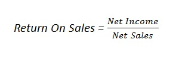

The return on sales (ROS), also known as a firm's operating profit margin, is a ratio used to evaluate a company's operational efficiency.This measure provides insight into how much profit is being produced per dollar of sales. An increasing ROS indicates that a company is growing more efficiently, while a decreasing ROS could signal impending financial troubles, and is expressed as follows:
Examples (choose from the list or add a new one):
{% if form %} {% else %}| Year | Net income | Net sales | Return on sales |
| {{ ros.year }} | {{ ros.net_income }} | {{ ros.net_sales }} | {{ ros.return_on_sales }} |